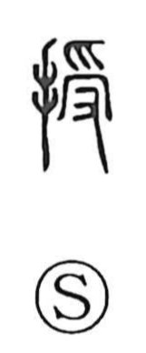

授

Kun: sazukeru, sazukaru | On: ju
to confer ・ to grant ・ to teach
Explanation
Shirakawa reads 授 as a phono-semantic character: the hand radical signals a manual act, while 受 provides the sound ju and the image behind the meaning. In the old form of 受, an upper hand (爪) presents something set on a tray, and a lower hand (又) receives it—an image that embraced both giving and receiving. With the addition of the hand classifier to create 授, the sense narrows to the giver’s action, “to confer, to grant,” and naturally extends to “to teach,” the passing of knowledge from one to another, while 受 remains for “to receive.”